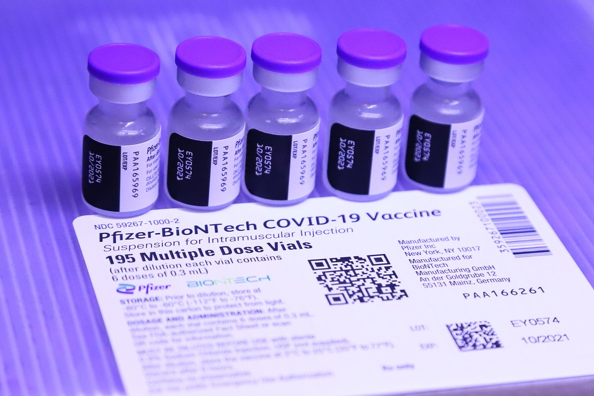
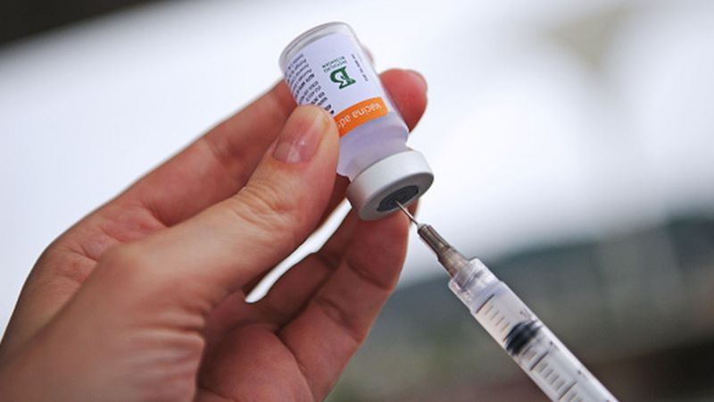
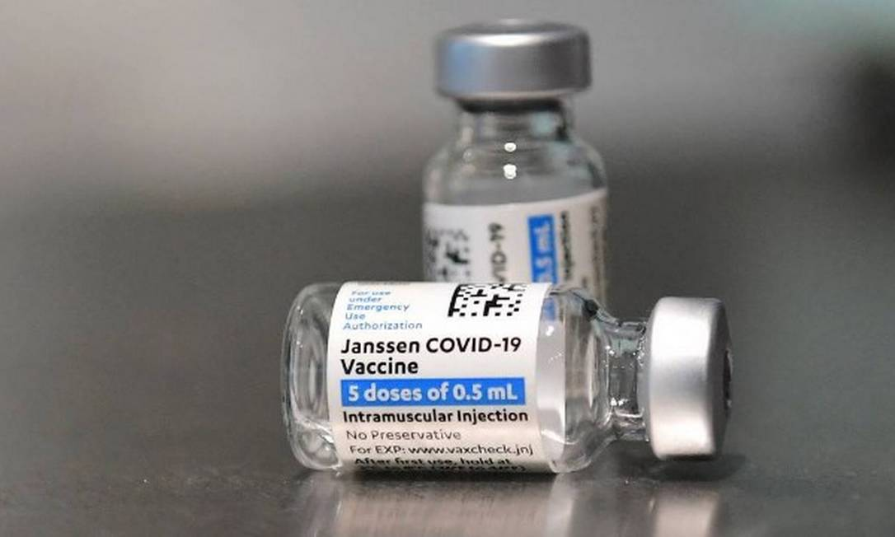
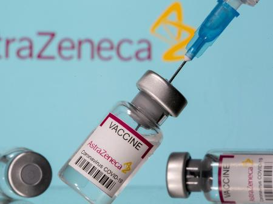

de Maringá
de MaringáVacinas disponibilizadas para a vacinação
Vacina BioNTech - Pfizer
A vacina Pfizer apresenta uma eficácia de 95%. Ela foi indicada para vacinação de emergência pela OMS, sendo segura e eficaz. São duas doses em um intervalo de 21 dias.
Ela é baseada em mRNA, utilizando RNA mensageiro sintético, auxiliando a geração de antícorpos contra o vírus. Foi decidido o uso do mRNA devido a seu potencial de alta resposta, além da rápida produção. Apenas um pedaço de material genético é usado, ao invés do vírus inteiro.
Vacina do Butantan - CoronaVac
A vacina CoronaVac do Butantan em parceria com a Sinovac, é o imunizante mais eficientes em proteção contra casos graves da doença; previne 97% das mortes de contaminados no Brasil.
Foi concluído a sua eficácia de 50,4% em casos muito leves, que não necessitam de atendimento; e 77,96% para casos leves com atendimento médico necessário. Sua eficácia geral pode chegar a 62,3%.
São duas doses com um intervalo de tempo de 21 a 28 dias.
Vacina da Johnson & Johnson - Janssen
A vacina da Janssen, a partir de estudos clínicos, demonstrou previnir a Covid-19 após uma dose única, com 85% de eficácia.
As primeiras doses estão sendo disponibilizadas pela empresa ao Ministério da Saúde.
Vacina de Oxford - AstraZeneca
A dosagem recomendada é de duas doses administradas por via intramuscular (0,5 ml cada), com um intervalo de 8 a 12 semanas.
A vacina AstraZeneca apresentou uma eficácia de 63,09% contra a Covid-19. Ela é segura e eficaz na proteção de pessoas contra riscos extremamente graves da Covid-19.
Pontos de vacinação na região de Maringá
As pessoas podem se vacinar nos seguintes pontos:
UBS Iguaçu: Avenida Arquiteto Nildo Ribeiro da Rocha, 5.328
UBS Mandacaru: Avenida Mandacaru, 465
UBS Tuiuti: Rua Caracas, 1.986
UBS Pinheiros: Rua Valeriana, 282
UBS Iguatemi: Rua Manoel Frigo, 151
UBS Floriano: Rua Pitanga, 912
UBS Policlínica Zona Sul: Rua Tabaetê, 396